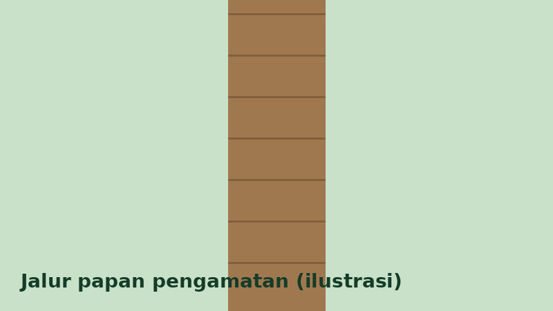

Mulai dari Nol
Pengamatan burung (birdwatching) tidak memerlukan alat mahal. Yang terpenting adalah sabar, tenang, dan teliti mencatat.

Perlengkapan Dasar
- Teropong (binokular) atau kamera dengan zoom.
- Buku catatan dan pulpen.
- Topi, air minum, dan pakaian berwarna netral.
Langkah Mencatat Pengamatan
- Tentukan lokasi dan waktu mulai.
- Amati bentuk tubuh, warna, dan paruh.
- Catat jumlah individu yang terlihat.
- Isi formulir pada halaman Lapor Temuan.
Etika di Lapangan
Jaga jarak dari sarang, jangan memberi makan burung, jangan memutar suara rekaman berlebihan, dan bawa kembali sampahmu.
Lihat contoh burungnya di Daftar Spesies.